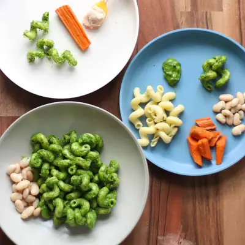

Green Pasta (Hulk Pasta)

Ingredients
- 6 ounces baby spinach
- 2 tablespons extra virgin olive oil
- 1 medium avocado
- 2 tablespoons lemon juice
- 1 teaspoon lemon zest
- 2 garlic cloves, can also use 1 teaspoon of garlic powder
- 1/2 cup grated parmesan (2 ounces)
- 1/2 cup water, broth, or canned coconut milk
- 8 ounces pasta
Steps
- Cook pasta according to package instructions. Reserve 1 cup of pasta cooking water and drain.
- Add the rest of the ingredients into a food blender and blend until smooth.
- Pour the sauce into the same pot you cooked the pasta in. Cook over medium-low heat for 2-3 minutes, stirring frequently. Add some reserved pasta water if it gets too thick.
- Add pasta and toss. Top with additional parmesan cheese or lemon juice, as desired.
Recipe by Min Kwon · Kidfriendly Meals, from MJ and Hungryman. Saved here for personal use; the original has the full notes, tips and photos. Open original